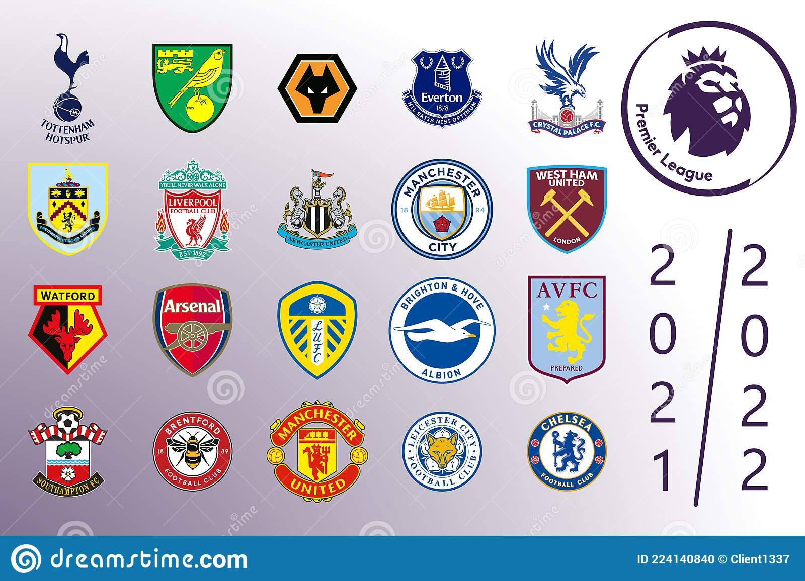

There are 20 teams in the Premier leagues, to learn about the top 6 clubs in the league, click here. The clubs in the League are Arsenal, Aston Villa, Brentford, Brighton, Burnley, Chelsea, Crystal Palace, Everton, Leeds, Liverpool, Manchester City, Manchester United, Newcastle, Norwich, Southampton, Tottenham, Watford, West Ham, Wolves.
The Premier league is a Football/Soccer league that takes place every year between August and May and involves each team playing eachother twice, home and away, which adds up to 380 matches. Three points are awarded for a win, one point for a draw and teams get nothing for a loss. The team with the most points at the end of the seasong wins the Premier League title and gets their hands on the Premier League trophy.